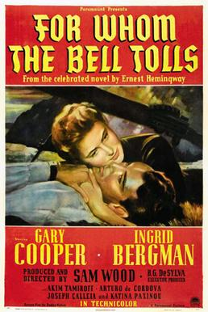

For Whom the Bell Tolls
16th Academy Awards
(Oscars 1944)
9 Nominations, 1 Award
| Nominations | ||
|---|---|---|
| Category | Nominees | Result |
| Outstanding Motion Picture | Paramount | Nominated |
| Actor | Gary Cooper | Nominated |
| Actress | Ingrid Bergman | Nominated |
| Actor in a Supporting Role | Akim Tamiroff | Nominated |
| Actress in a Supporting Role | Katina Paxinou | Won |
| Cinematography (Color) | Ray Rennahan | Nominated |
| Film Editing | John Link and Sherman Todd | Nominated |
| Art Direction (Color) | Bertram Granger, Haldane Douglas, and Hans Dreier | Nominated |
| Music (Music Score of a Dramatic or Comedy Picture) | Victor Young | Nominated |